Onde a Natureza e os Negócios se Encontram
Projetos editoriais que unem a simplicidade da natureza com a sofisticação do mundo corporativo.
Toda obra que publicamos
devolve algo à terra.
Desde 2021, cada projeto carrega um compromisso silencioso: que o papel tenha origem responsável, que a tinta respeite o solo, e que a narrativa inspire quem lê a cuidar do que é vivo.
"Publicar é um ato de permanência. E o que permanece precisa respeitar o mundo onde existe."
Três gestos.
Uma obra.
Do silêncio da escuta à permanência do objeto, assim nasce cada publicação da Editora Ortz.
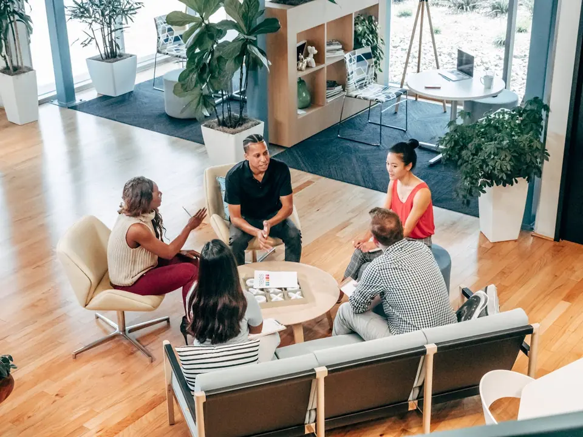
Pesquisa
Primeiro, escutamos.
Antes de qualquer palavra escrita, mergulhamos no universo do projeto. Mapeamos intenção, território cultural e o que o mercado ainda não ousou dizer. A obra começa aqui, em silêncio.
- Imersão no contexto da marca
- Análise de referências editoriais
- Definição do tom e registro da voz
Edição
Depois, construímos.
Texto, imagem e espaço em branco são elementos com igual peso. Cada página é pensada como uma composição onde o ritmo de leitura é tão importante quanto o conteúdo.
- Estrutura narrativa e curadoria de conteúdo
- Projeto gráfico e hierarquia tipográfica
- Revisão editorial com atenção ao detalhe
Publicação
Por fim, lançamos ao mundo.
A obra sai do ateliê e ganha vida própria em estantes, eventos, vitrines e plataformas digitais. Garantimos que o objeto chegue intacto, com a identidade e a força do que foi construído.
- Produção gráfica para impressão
- Versão digital e distribuição
- Estratégia de lançamento editorial
O que o silêncio do nosso trabalho construiu.
Cada número reflete um compromisso real com a excelência editorial e o cuidado com a natureza.
O que nos move
Uma editora que entende que cada obra tem sua própria voz, e que nossa função é amplificá-la com método, cuidado e permanência.
Curadoria com profundidade
Não publicamos apenas textos, construímos objetos com sentido. Cada projeto passa por leitura cuidadosa, pesquisa de território e projeto gráfico intencional.
Narrativas de marca autênticas
Branded content que vai além do institucional. Criamos volumes e publicações que criam pertencimento e fortalecem identidades corporativas com elegância.
Presença física e digital
Do volume impresso ao acervo digital, preparamos cada obra para circular com integridade em qualquer formato, sem perder a essência do projeto original.
Obras com raiz e permanência
Trabalhamos com tempo, método e atenção material. Cada publicação é pensada para durar, como um elemento da natureza que cresce com propósito.
Serviços Editoriais
Criamos projetos editoriais completos, desde a concepção até a publicação.
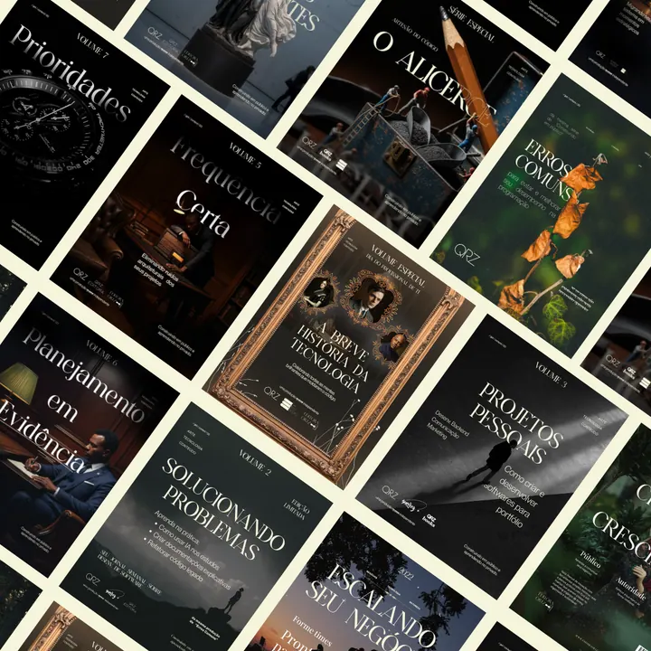
Publicação de Volumes
Desenvolvimento e publicação de livros e volumes temáticos que exploram a intersecção entre natureza e negócios.
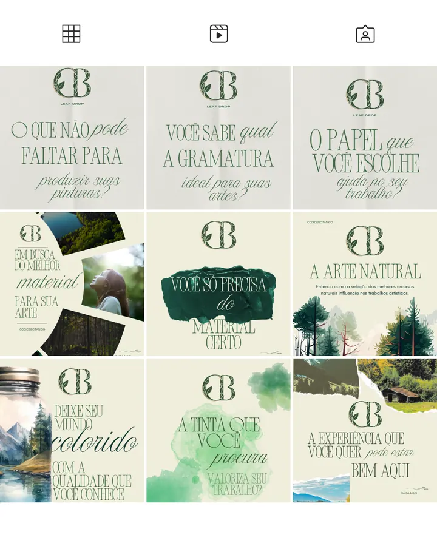
Conteúdo para Marcas
Criação de narrativas autênticas e projetos editoriais (Branded Content) que dão vida à identidade da sua marca.
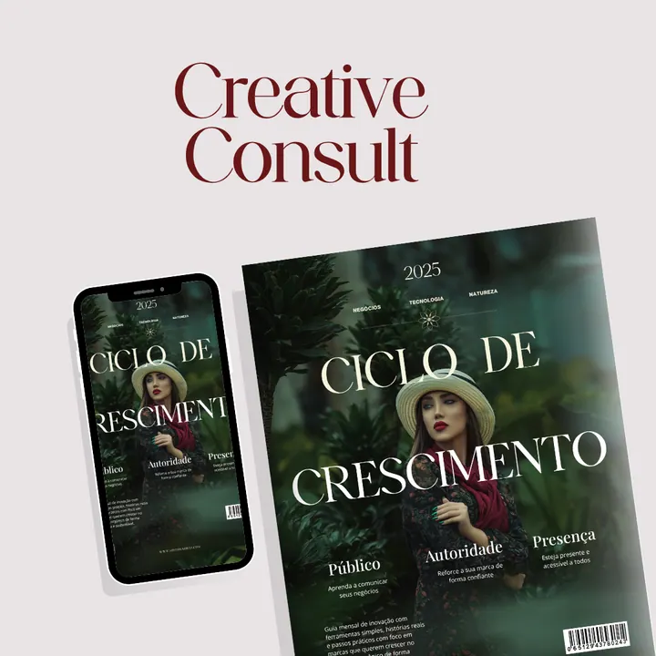
Consultoria Criativa
Consultoria estratégica para marcas que buscam infundir autenticidade e elementos naturais em sua comunicação.
Se a sua marca respira natureza, nós damos voz a ela.
Criamos para quem entende que comunicação autêntica é o melhor investimento.
Hotéis & Resorts Ecológicos
Volumes que traduzem a experiência do hóspede em narrativa permanente, conectando hospitalidade e natureza.
Marcas Sustentáveis
Branded content que comunica propósito sem soar como propaganda — com verdade e estética.
Corporações com Agenda ESG
Publicações que documentam compromissos ambientais com autenticidade e profundidade editorial.
Startups de Biotecnologia
Narrativas que conectam inovação científica com linguagem acessível e design sofisticado.
Volumes Publicados
Explore nossos volumes publicados e os projetos que criamos para marcas.

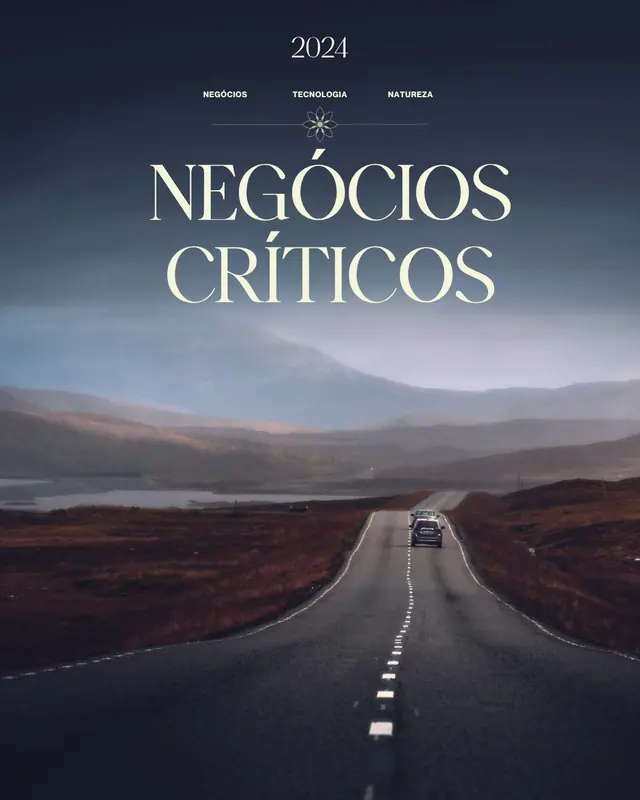


Trabalhos para Marcas
Projetos editoriais que elevam marcas com narrativas autênticas.
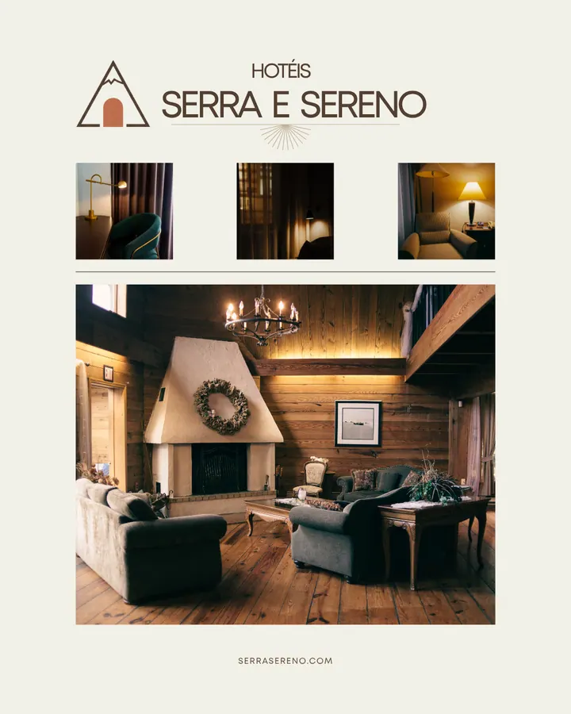
Hotéis Serra e Sereno
Luxo rústico e o conforto da natureza brasileira.
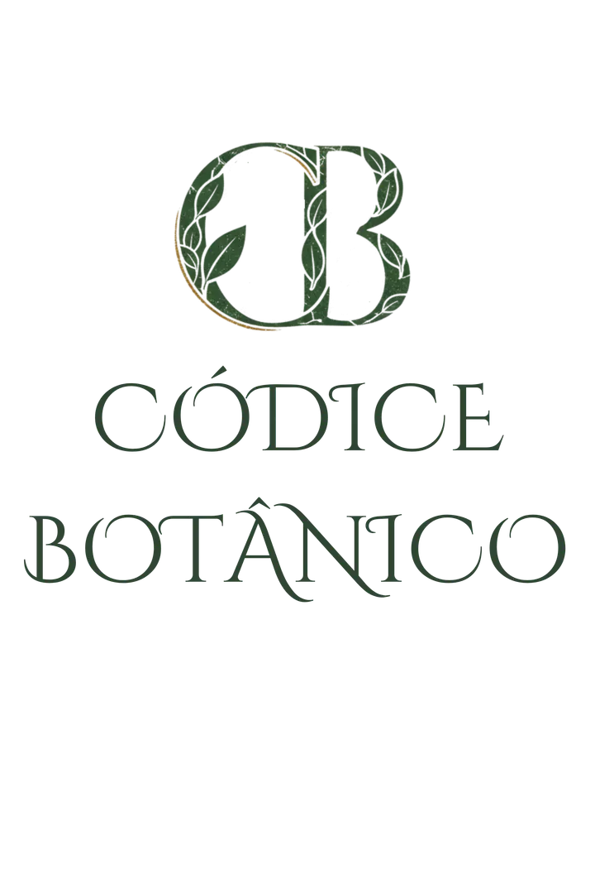
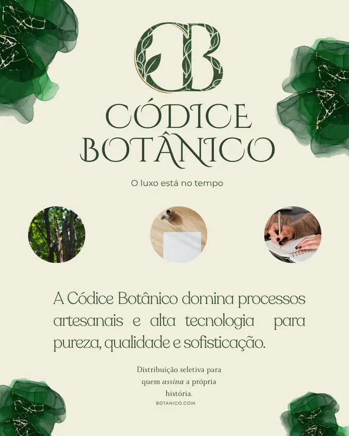
Códice Botânico
Papelaria de luxo com materiais sustentáveis para obras de alto valor.
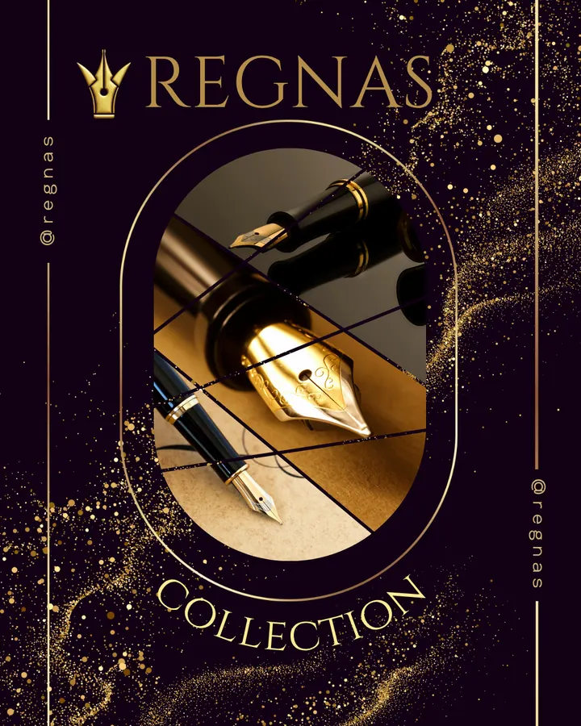
Regnas Collection
Canetas tinteiro elegantes feitas com madeira nobre para CEOs.
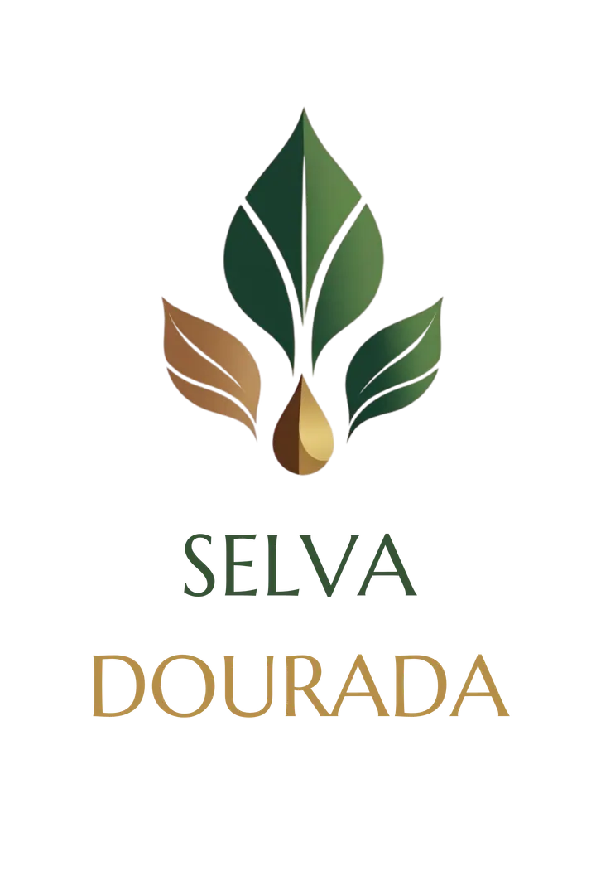
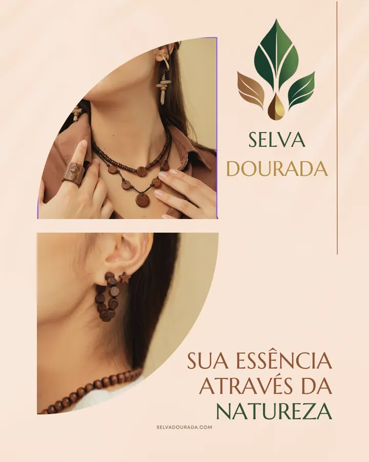
Selva Dourada
Joias inspiradas na natureza, cheias de autenticidade e elegância.
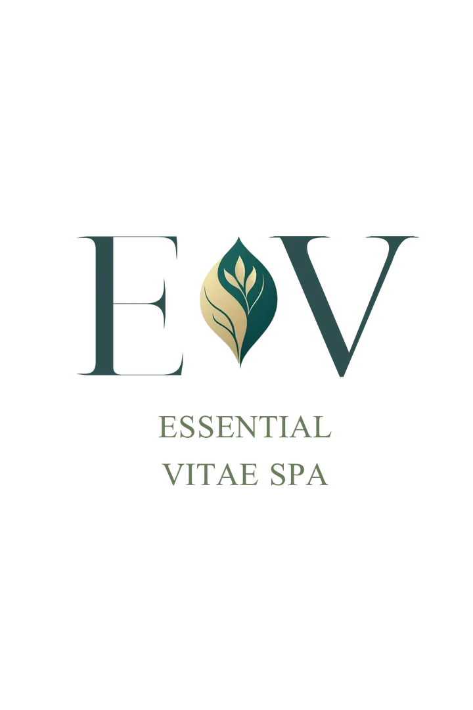
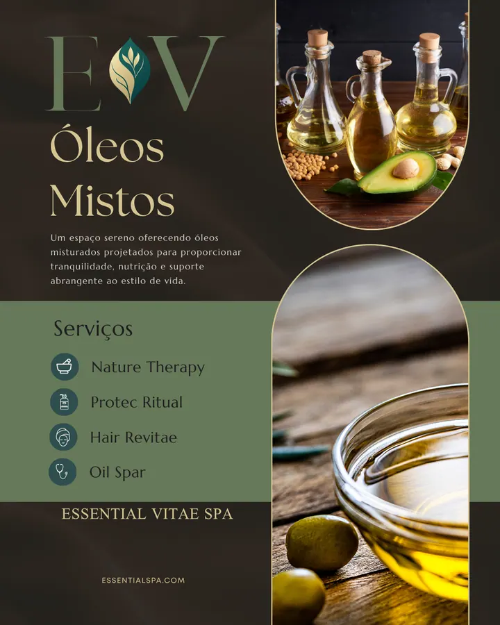
Essential Vitae Spa
Óleos essenciais que unem tradição botânica e tecnologia sustentável.
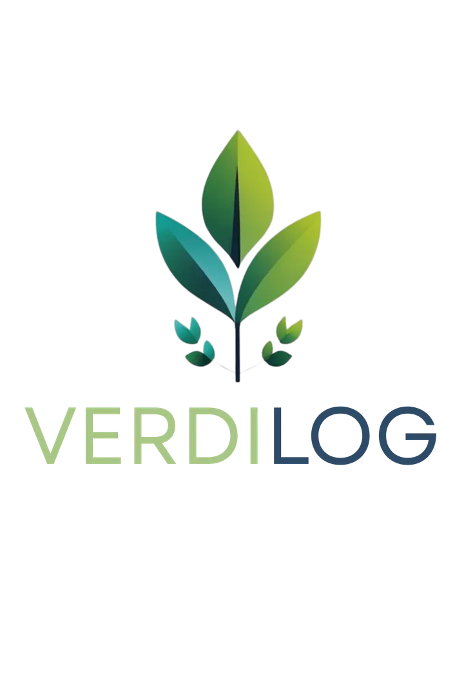
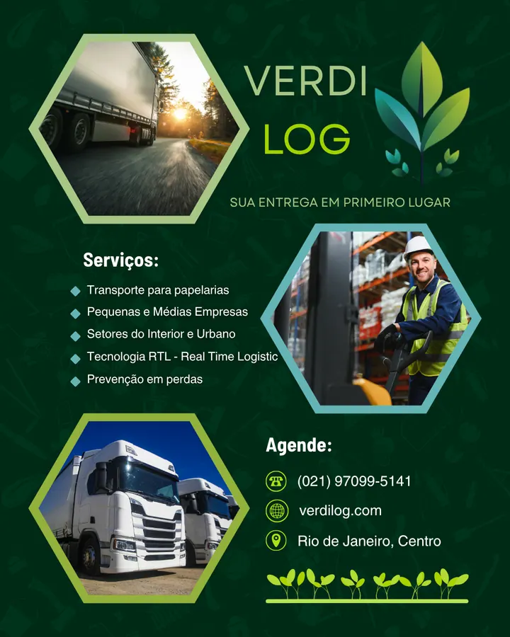
VerdiLog
Logística sustentável que conecta o interior e a cidade com inovação.
Quem viveu o processo, conta.
Cada projeto editorial começa com uma conversa. Veja o que nossos parceiros dizem sobre a experiência.
A Ortz não entregou apenas um livro. Entregou uma obra que traduz quem somos como empresa. O cuidado com cada detalhe — do papel à tipografia — mostrou que entenderam nossa essência antes mesmo de escrever a primeira linha.
Pensávamos que precisávamos de um relatório ESG convencional. A Ortz nos mostrou que era possível transformar dados em narrativa. O resultado foi um volume que nossos colaboradores guardam na estante, não na gaveta.
O processo editorial da Ortz é diferente de tudo que já vivi. Não é sobre entregar um produto — é sobre construir algo que faz sentido. A curadoria, o cuidado com os materiais sustentáveis, cada detalhe reflete propósito.
Queríamos contar a história da nossa marca sem clichês corporativos. A Ortz encontrou a voz certa — autêntica, sofisticada e com raiz. O volume que publicamos se tornou nossa melhor peça de comunicação.
Um projeto editorial merece um processo à altura.
A Editora Ortz estrutura obras, volumes e narrativas de marca com atenção ao conteúdo, ao objeto e ao tempo de circulação.
Iniciar Conversa
O que você precisa saber antes de começar.
Respostas diretas para as perguntas mais comuns sobre nosso processo editorial.
Conte-nos sobre seu projeto.
Cada projeto começa com uma conversa. Preencha o formulário e nossa equipe retorna em até 48h.